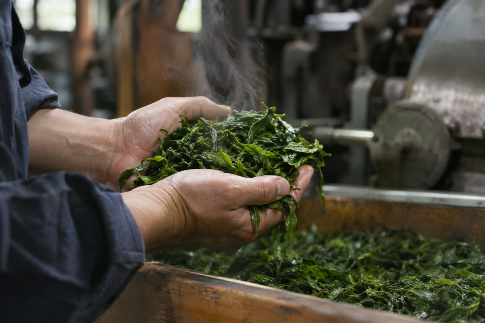

山の仕事を、
次の百年へ。
Message
茶づくりは、自然を相手にする仕事です。
思いどおりにならない日もありますが、
そのぶん、いい茶ができた年の喜びは大きい。
山の仕事を、いっしょに次の世代へつなぎませんか。
仕事の種類
Jobs- 01
茶畑
茶の木の手入れ、摘みとり、土づくり。山の一年を体で感じる仕事です。
- 02
製茶
摘んだ葉を蒸して、揉んで、乾かす。その日の葉に合わせて仕上げます。
- 03
お店
直営店での接客と販売。お客さまに、お茶の淹れ方もお伝えします。
- 04
卸の営業
全国の茶店へ、季節のお茶を届けます。産地の声を伝える仕事です。
働く人
People-
茶畑茶畑 入社3年目
季節の変化を、体で感じられるのが楽しい。
都会から移住して入社。春の新芽を見ると、一年の疲れが飛ぶそうです。
-
製茶製茶 入社12年目

同じ畑の葉でも、毎日ちがう。だから飽きない。
葉の香りと手ざわりで、蒸す時間を決める。工場のまとめ役です。
-
茶房翠嶺園 茶房 入社2年目
「おいしい」と言ってもらえる瞬間が好き。
お客さまの好みを聞いて、その人に合うお茶を選んでいます。
数字で見る翠嶺園
In Numbers- 38歳社員の平均年齢
- 約3割20代の社員
- 12名移住してきた社員
募集要項
Requirements- 仕事
- 茶の栽培・製茶
- 給与
- 月給 22万円〜
- 休日
- 年間105日（繁忙期の4〜5月は少なめ）
- その他
- 住まいの紹介あり。移住の相談にのります
茶畑・製茶スタッフ正社員
- 仕事
- 接客・販売・お茶の試飲の案内
- 給与
- 月給 21万円〜
- 休日
- 年間110日（シフト制）
- その他
- 社員割引あり
茶房スタッフ正社員
応募について
このサイトはデモのため、応募は受け付けていません。